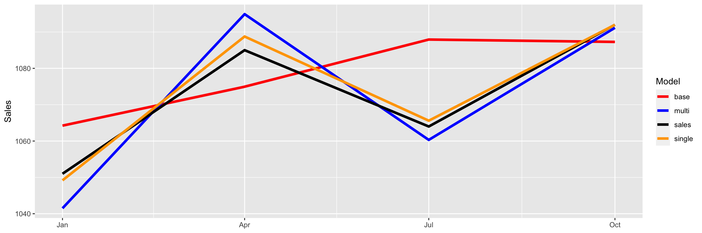

### Specify the function to calculate Adstock given a spend vector
calcAdstock <-function(x,w,args=NULL){
return(as.numeric(stats::filter(x=x,filter=w,method="recursive")))
}
step_adstock <-
function(recipe, ..., role=NA, trained=FALSE, skip=FALSE,
id=rand_id("adstock"), my_vector=NULL, w=0){
terms = ellipse_check(...)
add_step(
recipe,
step_adstock_new(
terms=terms,
trained=trained,
role=role,
skip=skip,
id=id,
my_vector=my_vector,
w=w)
)
}
step_adstock_new <-
function(terms, role, trained, my_vector,skip, id, w){
step(
subclass = "adstock",
terms=terms,
role=role,
trained=trained,
my_vector=my_vector,
skip=skip,
id=id,
w=w)
}
prep.step_adstock <-
function(x,training,info=NULL, ...){
col_names <- recipes_eval_select(x$terms, training, info)
my_vector <- purrr::map(training[, col_names],calcAdstock, w=x$w)
step_adstock_new(
terms = x$terms,
trained=TRUE,
role=x$role,
my_vector = my_vector,
skip = x$skip,
id = x$id,
w=x$w)
}
bake.step_adstock <-
function(object, new_data, ...){
vars <- names(object$my_vector)
new_data[,vars]<-
purrr::map2_dfc(new_data[,vars],object$my_vector, calcAdstock, w=object$w)
tibble::as_tibble(new_data)
}
tunable.step_adstock <-
function(x, ...){
tibble::tibble(
name = c("w"),
call_info = list(list(pkg="dials",fun="mixture",range=c(0,1))),
source = "recipe",
component = "step_adstock",
component_id = x$id)
}Introduction
I’ve been using the Tidymodels framework quite a bit lately and was interested in creating a tunable adstock function to search for the ideal rate without deviating from the Tidymodels framework. The functions below are pretty much just a rework of the ones provided in the documentation but extending it to include a tunable function input.
Creating the functions
Below are the functions you’ll need to prep, bake, and tune your step function.
Example
First step is to simulate some data so our dependent variable (sales) is related to the lagged values of tv and radio spend.
#install.packages("pacman")
set.seed(123)
pacman::p_load(tidyverse, tidymodels,lubridate,doParallel)
dateVector <-
seq.Date(as.Date("2018-01-01"),as.Date("2021-12-31"),1)
df <-
tibble(date = dateVector,
tv = rnorm(length(dateVector),100,20),
radio = rnorm(length(dateVector),50,5)) %>%
mutate(sales = round((lag(tv,1)*.075) + (lag(tv,2)*0.0375) +
(lag(radio,1) *.01 )) ) %>%
drop_na()
head(df)# A tibble: 6 × 4
date tv radio sales
<date> <dbl> <dbl> <dbl>
1 2018-01-03 131. 53.2 11
2 2018-01-04 101. 52.1 14
3 2018-01-05 103. 49.0 13
4 2018-01-06 134. 49.6 12
5 2018-01-07 109. 53.4 14
6 2018-01-08 74.7 50.9 14Next we split into our training/test sets. In this case we need to incorporate lagged values so when we make predictions on the test set we have the appropriate spend history to build up our adstock transformation properly for the first few observations.
my_split <- initial_time_split(df,lag=8)
train <- training(my_split)
test <- testing(my_split)
my_rs <-
sliding_period(train, date, period = "month",
lookback = 24, assess_stop = 4)Using the tidymodels framework, lets setup, run/tune, and fit our 3 models.
doParallel::registerDoParallel()
mdl_linear <-
linear_reg()
r_base <-
recipe(sales ~ tv + radio, data = train)
r_single <- r_base %>%
step_adstock(c('tv','radio'), w = tune('w1'))
r_multi <- r_base %>%
step_adstock('tv', w = tune('w1')) %>%
step_adstock('radio', w = tune('w2'))
wkflw <-
workflow() %>%
add_model(mdl_linear)
wkflw_base <- wkflw %>% add_recipe(r_base)
wkflw_single <- wkflw %>% add_recipe(r_single)
wkflw_multi <- wkflw %>% add_recipe(r_multi)
fit_base <-
wkflw_base %>%
last_fit(my_split)
#single adstock
wkflw_single_t <-
wkflw_single %>%
tune_grid(my_rs,grid=15)
fit_single <-
wkflw_single %>%
finalize_workflow(select_best(wkflw_single_t, metric = "rmse")) %>%
last_fit(my_split)
#multi adstock
wkflw_multi_t <-
wkflw_multi %>%
tune_grid(my_rs,grid=15)
fit_multi <-
wkflw_multi %>%
finalize_workflow(select_best(wkflw_multi_t, metric = "rmse")) %>%
last_fit(my_split)
final_base <- extract_workflow(fit_base)
final_single <- extract_workflow(fit_single)
final_multi <- extract_workflow(fit_multi)Examine our model metrics and the tuned adstock rates.
select_best(wkflw_single_t, metric = "rmse")# A tibble: 1 × 2
w1 .config
<dbl> <chr>
1 0.722 Preprocessor11_Model1select_best(wkflw_multi_t, metric = "rmse")# A tibble: 1 × 3
w1 w2 .config
<dbl> <dbl> <chr>
1 0.802 0.810 Preprocessor11_Model1collect_metrics(fit_base)# A tibble: 2 × 4
.metric .estimator .estimate .config
<chr> <chr> <dbl> <chr>
1 rmse standard 1.68 Preprocessor1_Model1
2 rsq standard 0.000614 Preprocessor1_Model1collect_metrics(fit_single)# A tibble: 2 × 4
.metric .estimator .estimate .config
<chr> <chr> <dbl> <chr>
1 rmse standard 1.42 Preprocessor1_Model1
2 rsq standard 0.293 Preprocessor1_Model1collect_metrics(fit_multi)# A tibble: 2 × 4
.metric .estimator .estimate .config
<chr> <chr> <dbl> <chr>
1 rmse standard 1.42 Preprocessor1_Model1
2 rsq standard 0.286 Preprocessor1_Model1Predict, summarize, and plot our predictions for each model. In the plot below I’ll summarize by quarter just to make it easier to visually see the differences between the models.
test_plot <- test
test_plot$base <- predict(final_base,test_plot) %>% pull()
test_plot$single <- predict(final_single,test_plot) %>% pull()
test_plot$multi <- predict(final_multi,test_plot) %>% pull()
test_plot %>%
select(date, sales:multi) %>%
pivot_longer(cols = -date) %>%
mutate(date = floor_date(date,"quarter")) %>%
group_by(date,name) %>%
summarise(value = sum(value)) %>%
filter(date >= "2021-01-01") %>%
ggplot(aes(x=date, y=value, color = name)) + geom_line(linewidth=1.5) +
labs(x=NULL, y = "Sales", color = "Model") +
scale_color_manual(values=c("red", "blue", "black", "orange"))
Summary
As expected, the models using the adstock transformation did a better job at predicting future sales. The multi/single adstock models seemed to perform about the same here with the single slightly edging out the multi model.